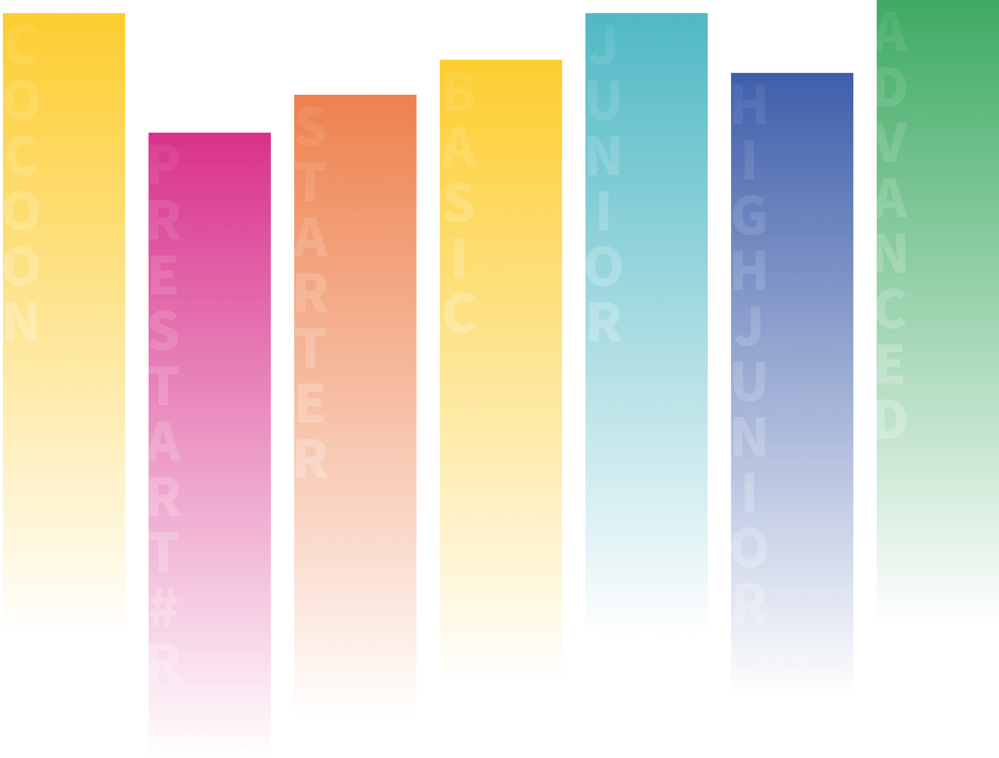
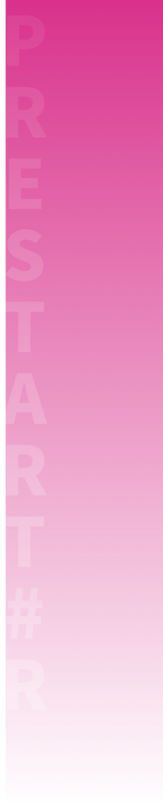
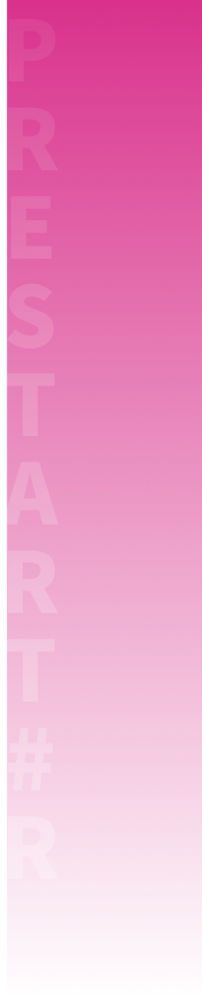
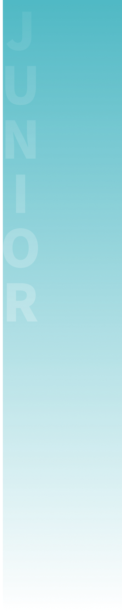
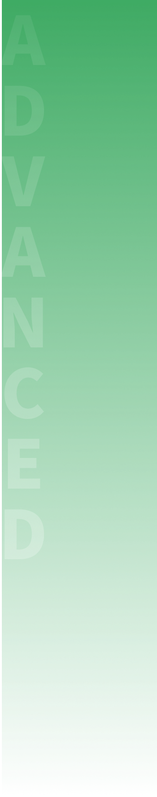
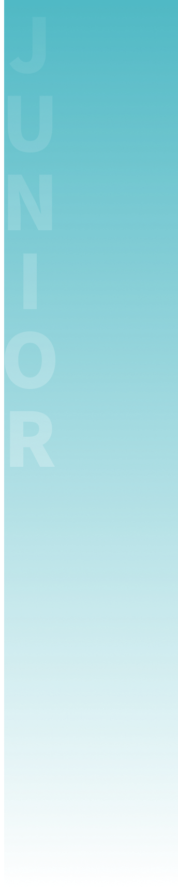
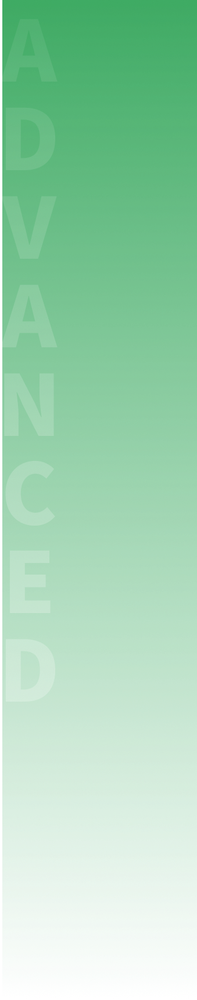
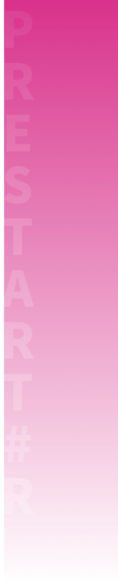
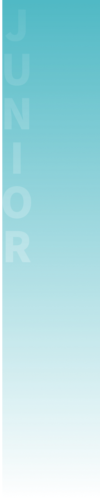
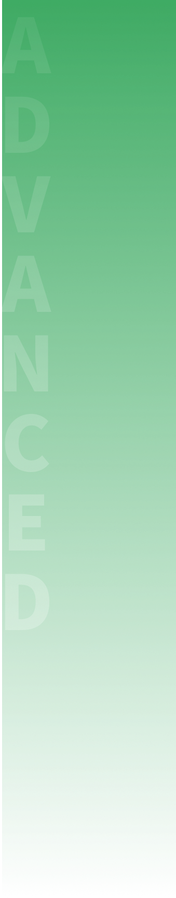

12년 영어학습 5년 프로젝트
토셀 랩 영어 클리닉
TOSEL Lab은,
200만명 응시자 성적데이터를 기반으로 한 AI 분석진단을 통해 개발된 맞춤식 영어교육프로그램으로서,
정확한 진단과 AI 학습을 통하여 영어학습 시간과 노력을 획기적으로 단축하는 것을 목표로 합니다.
국제토셀위원회, 고려대학교 언어정보연구소, 고려대학교 출판문화원 공동기획

 


 





